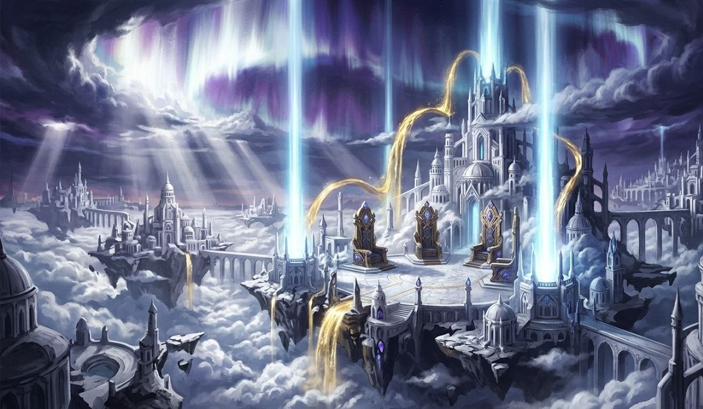
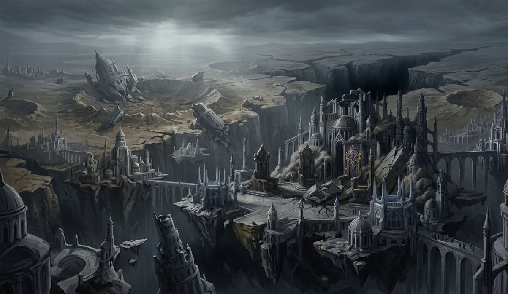
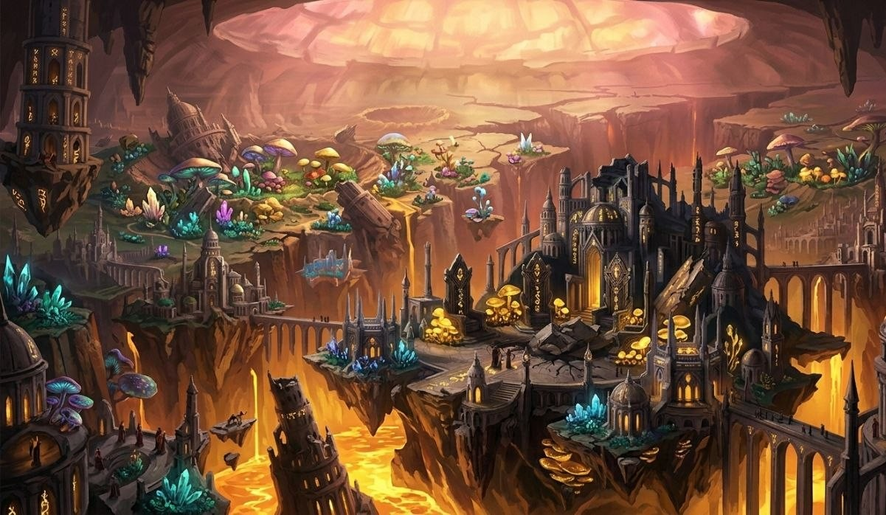
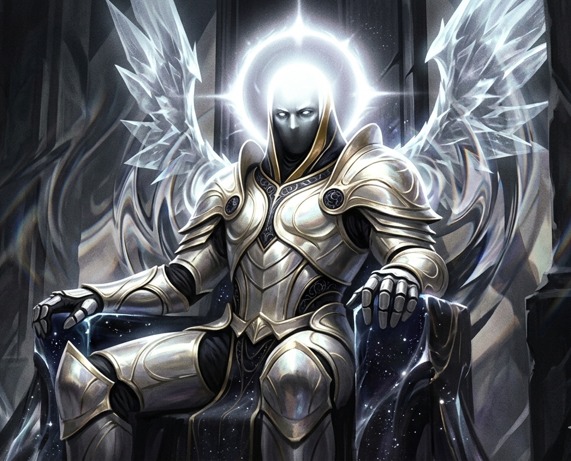
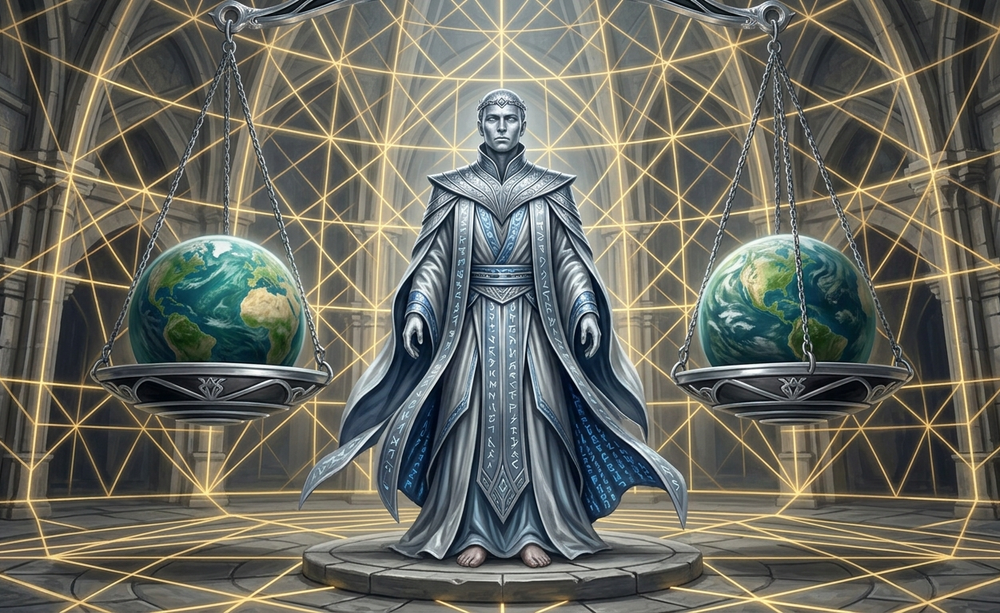
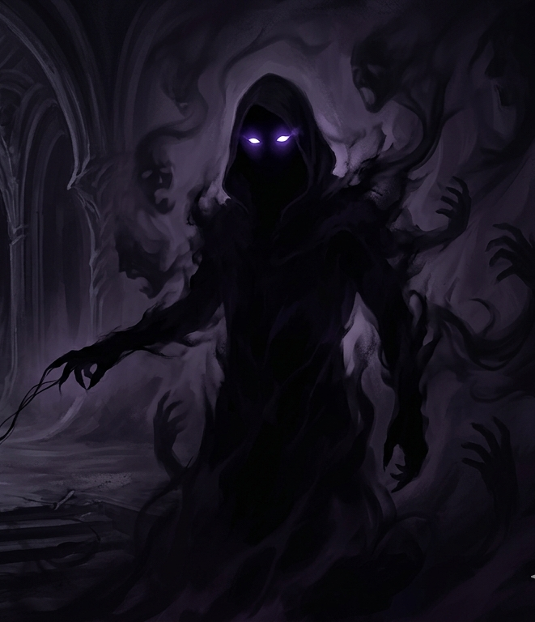
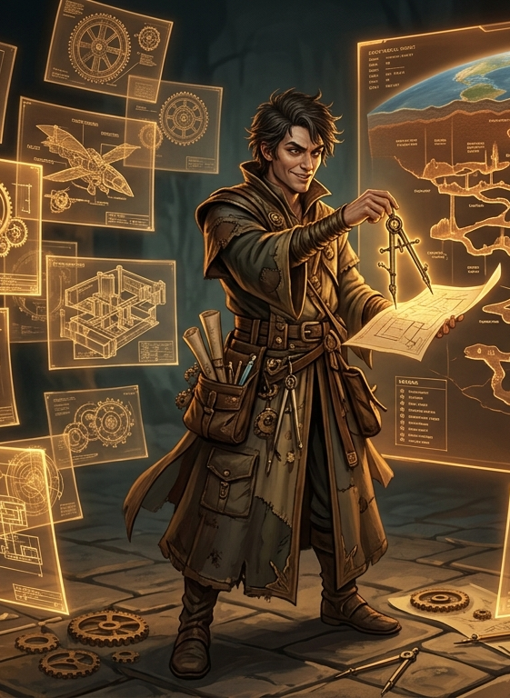
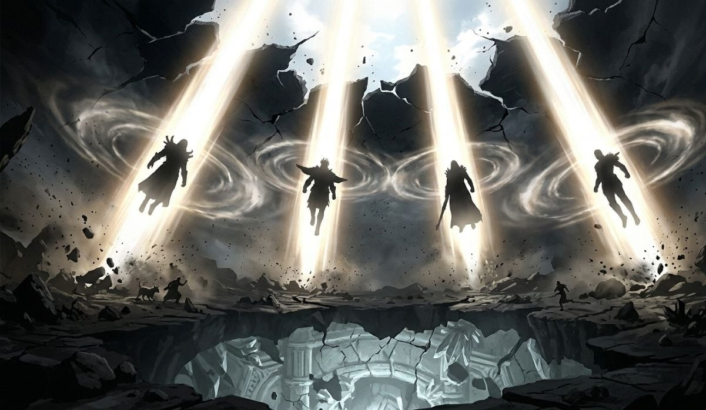
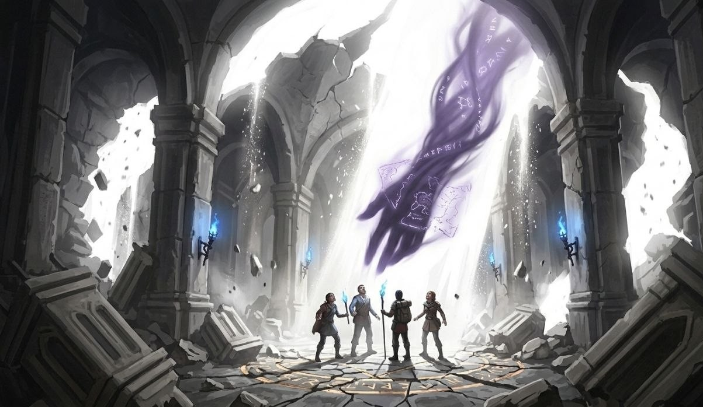
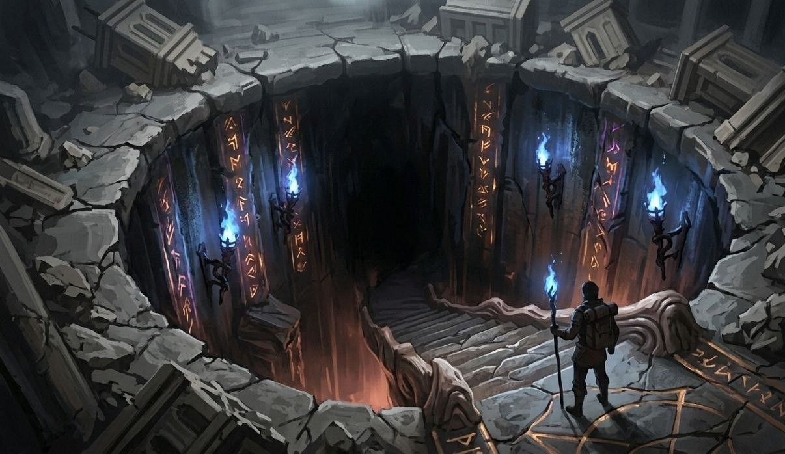

The Shape of All Things
In the age before memory, existence was divided across three planes — not by accident, but by design. Whether that design was intentional or incidental depends on which of the Supreme Beings you ask, and whether you trust the answer.
At the summit: The Upper Realms. Home to four beings of impossible power, built from light and will and something older than either. Below that: The Middle Ground — the surface world, called simply Earth by those who lived on it. Fragile, breathing, scarred by its own history but functional. And beneath that, in the deep dark, sealed beneath a ceiling of luminous stone:
The Neither-folk called that sky the Vault — the great luminous stone ceiling that stretched above their cavern world and glowed in amber and rose. It was sacred. It was sufficient. And for an eternity, that was enough.
They had never asked to be beneath anyone. They simply were.




The Supreme Beings
Four entities of the Upper Realms. They are not gods in the traditional sense — they don't answer prayers. They make decisions. And sometimes those decisions break worlds.
The Neither knows them only by the devastation they caused. Each of the four had their own part to play in the Descent. Each of the four has a different relationship with the ruin they left behind. None of them have fully accounted for it — and in that silence, the Neither has learned to speak for itself.

Rapture rules the Upper Realms not through love, but through the sheer weight of his presence. He doesn't need to be cruel — his existence is pressure enough. The ceiling that never lets you stand straight.
He sees adventurers as useful pieces in a game only he fully understands. He does not hate them. That almost makes it worse. He views the Neither's destruction as acceptable collateral — a reshaping, not a massacre. He has never apologized for the Descent. He never will.
And somewhere in the twisted logic of Rapture's mind, he believes he is doing the Neither a favor.

Law is not evil. That's what makes him so dangerous to argue with. He understood the Descent would cause devastation. He weighed it against what would happen if the Supreme Beings didn't descend — and he approved it.
He has never been fully on any side. He is the system. The dungeon itself, in many ways, runs by his architecture. Adventurers are permitted to grow strong because Law permits it. But he also permits the Neither's pain, because in his calculus, both must exist.
He is the Supreme Being most likely to speak to the Neither — and the one they most despise for it.

No one knows exactly what Vortex looks like. Not even the other Supreme Beings are fully certain. He operates in the spaces between decisions — the whisper before the rebellion, the open door in the wall everyone said was solid.
Of all four, Vortex was the most conflicted about the Descent. He said nothing publicly. But certain survivors speak of shadows that moved against the light — of warnings that arrived too late but arrived nonetheless. Some say Vortex left breadcrumbs in the Neither's ruin. Clues only the worthy could find.
No one knows whose side Vortex is truly on. That, to him, is the whole point.

Rex designed the rules of existence the way a child builds a tower — not because he was told to, but because he wanted to see what would happen. He is brilliant, mischievous, and fundamentally allergic to being taken seriously.
He did not vote for the Descent. He found the whole thing inelegant. The Neither was, in his opinion, one of the most fascinating constructs in all creation. He mourned it in the only way Rex mourns anything: by leaving puzzles inside it. By building the dungeon system. By making sure that even in ruin, the Neither could teach something.
Adventurers are, to Rex, his favorite audience. He roots for them. Not openly. But his fingerprints are on every hidden passage, every trick room, every boss that drops something that shouldn't make sense.
The Descent & The Collapse of the Vault
The Supreme Beings did not fall to Earth by accident. They descended — a deliberate crossing from the Upper Realms. Some say Rapture willed it. Some say Law permitted it because the math demanded it. Some say Vortex arranged it. Some say Rex dropped the event like a coin into a fountain, just to see the ripples.
The reason has never been fully explained. What is known is what happened next.

When four beings of that magnitude crossed through the upper atmosphere and took physical form on Earth's surface, the shockwave traveled down. Not outward. Down.
The Middle Ground shook. Kingdoms fell. But the surface world was designed to absorb impact — built over millennia of war and natural disaster.
The Neither was not.
The Vault cracked. Fissures of divine light punched through it for the first time in the Neither's history. Earthquakes remade entire regions. The inner-flame that warmed their civilization for centuries began destabilising. Cities collapsed. Forests of luminescent fungus burned.

The Neither had no word for what happened. They had to invent one. They called it The Collapse of the Vault.
And they called the beings who caused it something that doesn't translate cleanly — but the closest meaning is: Those Who Broke the Ceiling Without Knowing We Were Underneath It.
The Neither did not die quietly. Its survivors clawed out of rubble, breathed ash where they once breathed warm stone-air, and became something the Upper Realms had not accounted for.
Furious.

In the chaos of the Collapse, witnesses reported something that no one could fully explain: one shadow moving against the light. Extending downward from a crack in the shattered Vault toward a small group of survivors.
It carried faint glowing symbols. Partial maps. Written in a language the Neither did not recognise — but seemed to understand anyway.
The shadow left as quickly as it came. It was never confirmed who sent it. The Neither hasn't stopped wondering.
"Even his mercy has a cost we haven't read yet."
The bosses that adventurers encounter are not random monsters. They are survivors. They are the architecture of a dead civilization, given claws.
And they remember everything.

The Copper Tier — Voices of the Ruin
These ten are not the Neither's greatest. They are its most exposed — the ones close enough to the surface that adventurers with basic divine blessing can reach them. They are fragments of a civilization, not its crown.
Each one was something before the Collapse. Each one has a reason. And each one, in their own way, is a warning about what lies further below.

Before the Collapse, Valerius was the highest religious authority of the Vault-Keepers — priests who maintained the spiritual connection between the Neither and the luminous stone ceiling above them. They believed the Vault was sacred. A living membrane between the Neither and whatever lay beyond.
He watched his congregation die in seconds — buried under stone and scorched by light they'd never seen before. The temple he had maintained for forty years became rubble in forty seconds. He should have died with it.
He didn't. What he pulled from the ruins was not faith. It was the ash. And he found that the dead, under certain conditions of grief and fury, do not fully depart the Neither. They linger in the ash. Valerius, who spent a lifetime learning to speak to the Vault, found he could speak to them.

Before the Collapse, Alaric was the most decorated soldier in the service of King Calderon of the Ironspire — the Neither's most powerful surface-bordering kingdom. He believed in his king, his armor, his sword, and his sworn brothers. That was enough.
The Descent hit Ironspire first. Calderon died in his throne room when the ceiling came down. Alaric's armor, forged in the Neither's inner-flame, fused to his skin in the first wave of superheated air. He survived because he was already underground when the ceiling fell.
He came up to find that his entire world — his king, his men, his purpose — had been reduced to molten ruin. And the armor was part of him now. There was no removing it. There was only moving forward in it.

She has no name anymore. She gave it to her children. That was the Neither's custom in the Nether-Bloom District — a community of cultivators who grew bioluminescent gardens in the deep rock. When a mother had her third child, she surrendered her own name and became simply the Matriarch. The title was the honor.
She had five children when the Collapse hit. The Nether-Bloom District was particularly devastated — the bioluminescent plants annihilated by divine light, the fungal networks collapsed, the lower districts flooded within hours.
She does not speak of the ones she lost. She speaks for them. Every wail she releases in battle is grief stored in a body that refused to die because it had not yet finished being angry.

The Neither's infrastructure did not build itself. The Molten Architects used the inner-flame of the deep earth to create massive constructs of living rock — guardian-builders. They maintained tunnels, supported ceilings, regulated heat. They were never meant to fight. They were the Neither's bones.
When the Collapse hit, the Golem's foundational protocols — protect the structure, maintain the ceiling, preserve the heat — activated simultaneously. With no ceiling left to protect, no structure left to maintain, and the inner-flame destabilising beyond anything its programming could account for.
It is not evil. It has no capacity for evil. It is a machine experiencing something machines aren't supposed to experience. Something like grief, expressed as seismic fury.

Kael'thas was among the Neither's best scouts — a member of the Veil Division, an elite intelligence unit that monitored anomalies in the Vault. He filed seventeen reports in the six months before the Descent. Seventeen documented incidents of unusual energy signatures in the upper atmosphere.
They were reviewed. They were classified. Someone in the Neither's chain of command received those reports and decided the public didn't need to know.
He survived the Collapse by doing what he was trained to do: find the nearest shadow and stay in it. He has been in craters and shadows ever since. No longer hunting information. Hunting the people who carry the Upper Realms' blessing.

Zul had been tracking the Neither's erratic inner-flame fluctuations for years before the Descent. He was weeks away from completing a stabilising compound — something to reinforce the Vault's lower membrane and regulate the inner-flame.
The Descent made his work irrelevant overnight. The divine energy that flooded the Neither reacted with every compound he had stored in ways he couldn't have predicted. A prototype compound bonded to his bloodline through a contamination event he never fully reconstructed. His children showed symptoms first. Then his apprentices.
He is still in the lab. The goal has changed. He is no longer trying to stabilise anything. He is trying to create something that will make the divine energy hurt in return. Every concoction he throws at adventurers is a test. He is learning from every fight.

There is no single story here. That is the point. The Bone-Hydra Spawn is not one creature — it is many. The mass graves left behind by the Collapse created pockets of concentrated Neither-grief in the broken rock. When the Vault-Keepers died with the Vault, the ritual boundary that kept the dead at peace collapsed.
The dead found each other in the dark. Bone by bone. Skull by skull. Fused by grief into something that wasn't alive in any meaningful sense, but was furious in every sense. The Hydra's multiple voices are not a quirk of biology. They are literally multiple people, speaking at once, from inside a body they built together because they had nowhere else to go.
Every head is a community. Every voice is a name the Neither hasn't had the chance to mourn properly.

Morgana was not born in the Neither. She came from the surface — the daughter of a cartographer and a street performer — and found her way into the Neither through a collapsed trade route at nineteen. She built her reputation in the Pale Throne, a court of artists and illusionists who maintained the Neither's cultural memory.
She hated the sky before the Collapse. Not because of the Descent — this is important. The Upper Realms' influence seeped into surface culture in ways she found suffocating. She came to the Neither because it made its own light. When the Descent happened and the Vault cracked, the divine light that flooded in changed the Neither's sky permanently to something grey and in-between — a half-light that pleased no one.
Morgana painted it every day for a year. Trying to remember what the Vault looked like before. Then she stopped painting. She started practicing something else entirely.

Grog did not come from the Neither. He came from the worst part of it — the Upper Rim, a network of trade routes that existed in the grey economy between the Middle Ground and the Neither's upper layer. Grog was property in that system from the time he was old enough to carry weight.
When the Collapse happened, the Upper Rim was the first thing to go. Every master he'd ever had was incinerated in the first wave. The chains broke — literally, the heat warped the metal and they fell from his wrists. He stood in the rubble and waited to feel free.
He didn't. Because the walls were still there. You can break the chain and leave the posture. He made new chains — his own, out of the metal in the rubble. He wears them differently now. He has been furious ever since — not because he's still enslaved, but because the Supreme Beings destroyed the people he wanted to destroy himself.

She and Valerius served the same order. That is not a coincidence. The Vault-Keepers had two divisions: the priests who maintained the Vault's spiritual connection — Valerius's domain — and the seers who monitored what came through the Vault. The Oracle was the highest-ranked seer in recorded Neither history.
She saw the Descent coming. Not days ahead — years. Decades. She brought her visions to the inner circle. They brought them to the authority structure. And the same suppression happened. Someone decided that visions of sky-born devastation were bad for social stability. The Oracle was reassigned to ceremonial duties.
When the divine light finally punched through the Vault, it hit her open eyes. She can no longer see the world as it is. She sees only what will be. Every timeline. Every branching moment. An infinite, painful, unfiltered view of all possible futures, with no ability to close her eyes and rest.
The Unanswered Questions
The copper tier bosses are not the top of the hierarchy. There are names spoken in the deeper dungeons — names that make even the bosses lower their voices. The Neither had kings. Some of them are still alive. And the questions that the surface of this story raises have not been answered — not yet.
Somewhere deeper, the Neither remembers itself more completely. The copper bosses know this. None of them talk about what's beneath them. That, more than anything, should give adventurers pause.